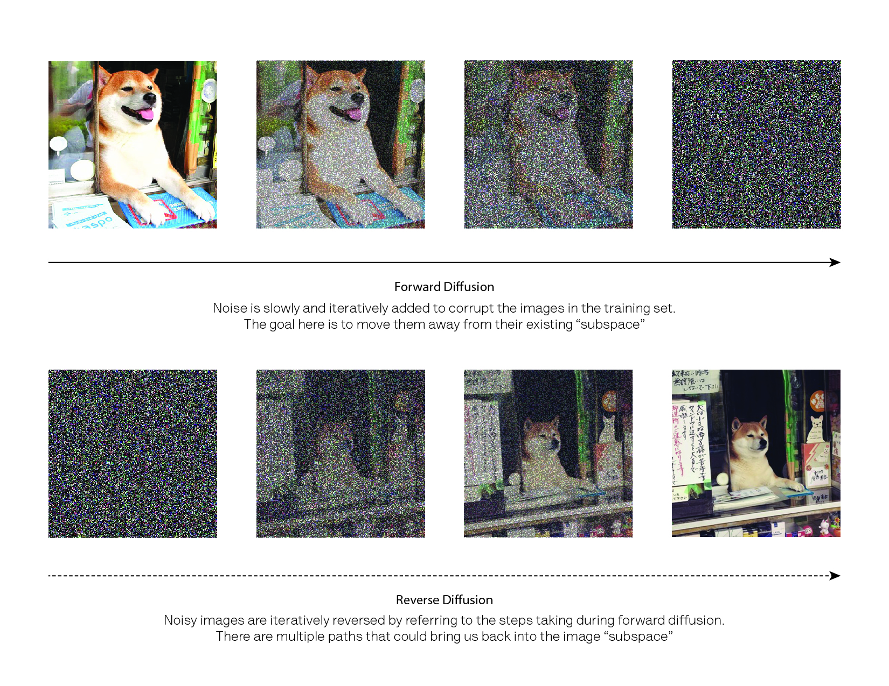

AI Image Generation
Joanna Schroeder
Presentation to UCSF
June 24 2024
Learning Goals
- After completing this course, students will be able to…
- Understand the basics of how AI image generation works
- Apply ethical and equity lenses to analyze relevant applications of
this technology
- Feel inspired, curious, and empowered to continue to explore this
technology in the future
Take a minute to reflect and record any additional learning goals you
have for yourself.
In the news: Adobe
- Last week the Federal
Trade Commission sued Adobe (Photoshop, Illustrator, Acrobat
software company) for predatory business practices
- This cast a light on recent criticism Adobe has received unveiling
its AI software Adobe Firefly, which aims to be a
leader in AI software for creative and artistic endeavors, providing a
suite of tools including AI image generation
- Critics of Firefly wonder:
- How does AI image generation fit into artist’s workflows? Will it
replace artist’s jobs?
- What resources did Adobe use to build Firefly?
- Is information about Firefly transparent and available?
- Does Firefly produce low quality or harmful images?
How does AI image generation work?
- Requires two main components:
- A model (algorithm)
- Training data
AI image generation: Model
- Leverages sophisticated models known as deep
learning models
- Essentially designed to mimic how the human brain works (think
pattern recognition, learning networks)
- Stable diffusion

Top set of four images where a dog progressively
turns to static, Bottom set of four images where static progressively
turns into a dog
Image Credit: University
of Toronto Libraries
AI image generation: Training data
- Voluminous (i.e. millions of images) (e.g. Adobe
firefly 300 million)
- Most of these models are designed for generally without a specific
task or focus in mind, so topic can vary
- But keep in mind thing that are less frequent in the dataset will
show up less frequently
- Annotated/but can be supervised or unsupervised
AI image generation in the wild
- Popular AI image generation technologies:
Knowledge Check
- Questions?
- Where have you encountered AI image generation? Have you used any AI
image generation technologies?
Ethics and equity lenses: AI image generation
- Training data
- How was the training data collected?
- Is the training data biased in a way that will produce harmful
outcomes?
- Is there a need for equity of access to AI image generation
tools?
V: Validate data
A: Analyze algorithms
L: Legal and ethical considerations
I: Interpret how it works
D: Diversity and bias
A: Accuracy check
I: You
Activity
Jamboard
Engage with each scenario by asking a question or making a comment.
What would questions or considerations come to your mind?
Hint: If you’re stuck visit University
of Toronto’s VALID-AI
Scenario 1. You are putting together a presentation for your
students/classmates. You would like to include a technical diagram, but
you don’t find anything useful through standard image repositories. You
consider that you could use an AI image generation tool for this
task.
Scenario 1.
- What
is the guidance on AI generated images in education?
- Which model is appropriate for this task?
- What is the training data for the selected model?
- How can I transparently report that I’m using AI image
generation?
- What is the context of my presentation?
- What is the benefit to the audience?
Scenario 2. You are a member of a research team. Your team recently
finished collecting and analyzing data for your experimental trial. One
of your team members offers to feed the data into an AI tool to
efficiently generate figures.
Scenario 2.
- What
is the guidance using AI tools to generate figures?
- Which model is appropriate for this task?
- What is the training data for the selected model?
- Do we have permission to release the experimental data to a
generative AI tool?
- What will the figures be used for? Are they drafts or final?
- How will we validate the figures?
Frameworks
- Backwards/Integrated Course Design
- Developed by Fink (2003)
- A model for understanding how situational factors, learning goals,
feedback and assessment, and teaching/learning activities are
interrelated
- Universal Design for Learning
- Developed by CAST (2018)
- A framework for inclusive teaching that treats engagement (“why”),
representation (“what”), and expression (“how”)
Planning Process: Begin with Situational Factors
- Fink (2003)
- “What is the special instructional challenge of this particular
course?”
- “How does this course fit into the larger curricular context?”
Planning Process: Begin with Situational Factors
- ~25 students, non-technical UCSF community members (faculty,
students, librarians)
- Library workshop, one 20 minute session
- Over zoom (in person and hybrid considerations)
Planning Process: Learning Goals
- Fink (2003)
- “What would I like the impact of this course to be on students, 2-3
years after the course is over?”
- “What would distinguish students who have taken this course from
students who have not?”
- Moving from content centered to learning centered
- Using Fink’s taxonomy of significant learning
Assessment and Evaluation
- Fink (2003)
- “In what kind of situation do I expect students to need, or to be
able to use this knowledge?”
- Forward looking assessment
- Self assessment
- Active learning and formative assessment
o How did you consider accessibility? Record the session, materials
available openly Chat: provide links in multiple ways Consider a cell
phone user/multiple tabs Alt text Markdown = accessible for screen
readers UDL More/different engagement opportunities o What would you do
if you had more time? Add additional scenarios One about protecting our
own data One about use in an experiment/data collection context
Introduce and use frameworks Data Science Framework Data Science Ethos
Frameworks for Ethics Framework for this specifically Add more
discussion in small groups o What would you change if this was an
in-person or hybrid session?
References
Fink, L. D. (2003). A self-directed guide to designing courses for
significant learning. University of Oklahoma, 27(11), 1-33.
CAST (2018). Universal Design for Learning Guidelines version 2.2.
Retrieved from http://udlguidelines.cast.org Knuth, D. E. (1984).
Literate programming. The computer journal, 27(2), 97-111.
Boenig-Liptsin, M., Tanweer, A., & Edmundson, A. (2022). Data
Science Ethos Lifecycle: Interplay of Ethical Thinking and Data Science
Practice. Journal of Statistics and Data Science Education, 30(3),
228–240. https://doi.org/10.1080/26939169.2022.2089411
Keller, S. A., Shipp, S. S., Schroeder, A. D., and Korkmaz, G.
(2020), “Doing Data Science: A Framework and Case Study,” Harvard Data
Science Review, 2. DOI: 10.1162/99608f92.2d83f7f5.